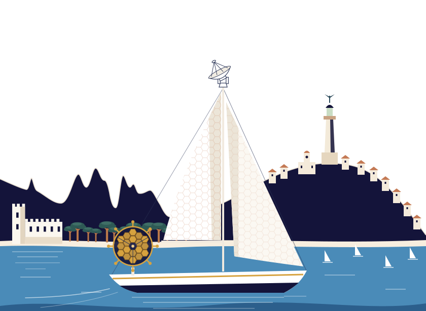

01
ALMA and JWST for dust and PAHs
What have we learned about dust from JWST and ALMA?
Navigating the
of the Universe
from early epochs to cosmic noon

1–5 March 2027
IFPU – Institute for Fundamental Physics of the Universe · Trieste, Italy
Dust is a fundamental component of galaxies: it absorbs ultraviolet radiation and re-emits it in the infrared, regulates the cooling of the interstellar medium and star formation, and traces the cycle of metals. Yet how dust forms and evolves in the first billion years of the Universe, and what role it plays across galaxy evolution, remain among the outstanding challenges in astrophysics.
JWST and ALMA have transformed the field. ALMA finds large dust reservoirs already in place at z > 6, while JWST directly constrains extinction curves, dust composition and PAHs in early galaxies. The emerging picture is puzzling: some early galaxies are already very dusty, others surprisingly dust-poor, and the role of AGN in heating and destroying dust remains unclear.
Meanwhile, simulations are starting to model the full dust lifecycle. The question is no longer whether dust is there early on, but how it forms, what it is made of, and how it shapes what we observe. This focus week brings together ~25 observers and theorists to tackle these questions together.
01
What have we learned about dust from JWST and ALMA?
02
What is the role of AGN in shaping dust properties?
03
Are our simulations ready for the high-redshift Universe?
Mornings: introductory seminars and talks. Afternoons: discussions, brainstorming and small-group work between observers and simulators, with dedicated time to plan joint ALMA and JWST proposals.
All participants are encouraged to give a talk, although it is not mandatory. Titles and abstracts will be collected ahead of the meeting.
Below is the tentative outline of the week. The full program, with speakers and times, will be announced later.
IFPU – Institute for Fundamental Physics of the Universe
Via Beirut 2, 34151 Trieste, Italy (Miramare campus)
Participants cover their own travel; IFPU provides full local support, including accommodation and daily meals.
Priority for support is given to early-career researchers and to scientists based outside Italy.
Participants are hosted in local hotels or at the Adriatico Guesthouse ↗, on the ICTP campus by the sea, close to IFPU.
Please check current timetables before travelling.
If you need an official invitation letter for your visa application, please contact the organizers as early as possible.
Social activities will be announced soon.